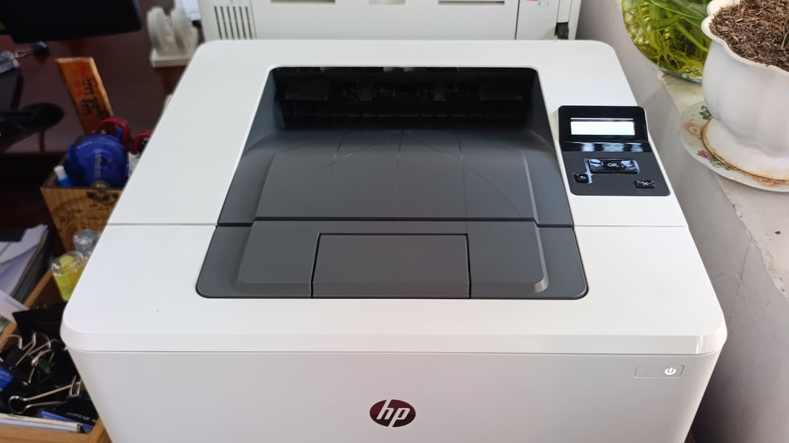

Bơm mực, nạp mực máy in Quận 8 tận nơi — kho đặt ngay Phạm Hùng
Kho vật tư đặt tại 5/19 Phạm Hùng. Kỹ thuật tới Quận 8 trong 15 – 30 phút — xem máy rồi báo giá, anh/chị đồng ý thì mới tháo.

Kho mực và kỹ thuật của chúng tôi đặt tại 5/19 Phạm Hùng — tức là nằm trong chính Quận 8. Khách ở đây gần như luôn được phục vụ trước các quận khác, thường 15–30 phút kể từ cuộc gọi. Đây là lợi thế duy nhất không thể sao chép bằng quảng cáo: khoảng cách thật.
Quận 8 có đặc thù riêng mà kỹ thuật phải tính trước khi đi. Nhiều tuyến là hẻm nhỏ xe hơi không vào được, nên chúng tôi đi xe máy kèm thùng vật tư. Khu chợ đầu mối Bình Điền thì ngược lại — cao điểm vào đêm và sáng sớm, máy in phiếu cân, phiếu giao hàng chạy liên tục, hỏng lúc nào là tắc lúc đó.
Thông tin nhanh — Quận 8
| Thời gian tới | 15 – 30 phút |
| Nạp mực laser A4 | từ 80.000đ |
| Máy A3 / photocopy | từ 250.000đ |
| Phun mực hệ bình | từ 150.000đ |
| Giờ làm việc | 08:00 – 19:00 |
| Hoá đơn VAT | Có |
Bơm mực, nạp mực, thay mực — và lúc nào chỉ cần lắc hộp
Khách Quận 8 gọi bằng đủ cách: bơm mực máy in, nạp mực máy in, thay mực máy in, đổ mực máy in. Cả bốn đều là một việc — cho mực mới vào hộp mực đang dùng, kèm vệ sinh buồng mực. Giá như nhau, không có chuyện "bơm" rẻ hơn "nạp".
Chỉ "thay hộp mực" là việc khác: bỏ hộp cũ, lắp hộp mới nguyên bộ. Đắt hơn nhưng cần thiết khi vỏ hộp đã nạp quá 4–5 lần.
Một mẹo tiết kiệm mà chúng tôi vẫn nói thẳng với khách: nếu bản in mới chỉ mờ nhạt đi và chưa có sọc, hãy tháo hộp mực ra, lắc ngang vài lần rồi lắp lại. Nhiều trường hợp in thêm được 50–100 trang nữa, chưa cần gọi ai. Khi lắc không còn tác dụng thì mới thật là hết mực.
Các khu trong Quận 8 chúng tôi nhận tận nơi
Khu Phạm Hùng – Cao Lỗ (gần kho nhất, tới nhanh nhất)
Chánh Hưng, Bình Đông, Phú Định
Chợ đầu mối Bình Điền và các vựa quanh chợ
Tuyến Dương Bá Trạc – Nguyễn Duy – Bến Bình Đông
Khu Tạ Quang Bửu – Âu Dương Lân
Trường học và phòng khám dọc Phạm Thế Hiển
Ba nhóm khách Quận 8, ba kiểu hỏng khác nhau
Vựa và hộ kinh doanh quanh chợ Bình Điền
Máy in phiếu chạy cả đêm, bụi và hơi ẩm nhiều. Hỏng thường gặp là mực lem do ẩm và bánh kéo giấy chai sớm. Nhóm này cần xử lý gấp theo giờ chợ, không phải giờ hành chính — chúng tôi nhận hẹn trước cho ca sáng sớm.
Nhà phố và hộ gia đình trong hẻm
Máy in dùng ít, có khi vài tuần mới in một lần. Lỗi phổ biến không phải hết mực mà là mực khô đóng bánh trong hộp và trục từ bị chai. Vệ sinh và nạp lại là chạy tốt, không cần thay hộp.
Văn phòng nhỏ, phòng khám, trường học
In đều mỗi ngày nên hết mực đúng chu kỳ. Nhóm này phù hợp hợp đồng bảo trì tháng: chúng tôi theo dõi số trang, chủ động nhắc trước khi máy hết mực giữa giờ làm.
Bảng giá đầy đủ theo mã hộp mực
Giá như nhau cho cả bảy khu — chỉ thời gian tới là khác.
Máy hỏng chứ không chỉ hết mực?
Xem bảng triệu chứng – nguyên nhân để biết việc nào xử lý được ngay tại chỗ.
Câu hỏi thường gặp — khách Quận 8
Nạp mực máy in Quận 8 bao lâu thì kỹ thuật tới?
Thường 15–30 phút vì kho đặt ngay trong quận, ở 5/19 Phạm Hùng. Giờ cao điểm hoặc vào sâu trong hẻm thì cộng thêm khoảng 10 phút. Nếu đang có ca gần đó, có khi tới trong 10 phút.
Nhà trong hẻm nhỏ, xe không vào được thì sao?
Kỹ thuật đi xe máy kèm thùng vật tư nên hẻm nhỏ không phải vấn đề. Anh/chị chỉ cần nhắn số hẻm và điểm dễ nhận ra gần nhất.
Khu chợ Bình Điền có nhận ca đêm và sáng sớm không?
Có, theo hẹn trước. Chúng tôi hiểu máy in phiếu ở vựa không chạy là hàng không ra được, nên ưu tiên nhóm này ngoài giờ hành chính.
Nạp mực tại nhà hay phải mang máy đi?
Làm tại nhà, tại chỗ. Việc nạp mực và vệ sinh buồng mực chỉ cần tháo hộp mực, không cần tháo máy. Chỉ khi lỗi nằm ở lô sấy hay bo mạch thì mới phải mang về xưởng, và chúng tôi báo trước chi phí.
Khu vực lân cận
Đặt nạp mực tận nơi Quận 8
Kỹ thuật tới trong 15 – 30 phút. Xem máy rồi báo giá, anh/chị đồng ý mới tháo.